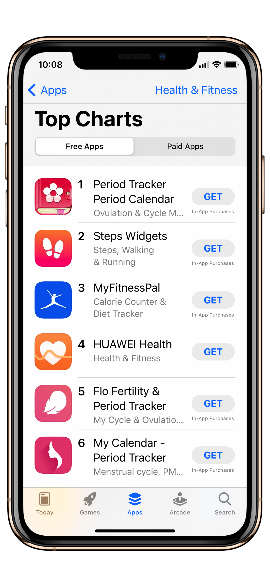
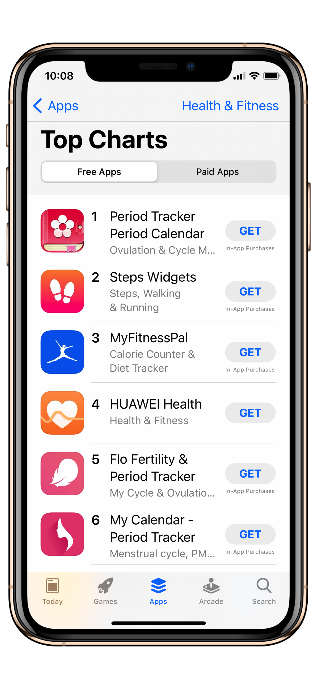

Steps Widgets
Developed in April 2021
Steps Widgets is a family of lightweight, customizable iPhone widgets that display your daily steps, distance, and related fitness metrics right on the home screen. The design focuses on clarity, battery friendliness, and easy configuration so users can glance at their progress without opening the Health app.
- Seamless Apple Health integration for real-time step counts
- Multiple widget styles and sizes to suit different home screen layouts
- Low-power updates and efficient data reads
- Simple customization: colors, labels, and displayed metrics
The app was built to be a no-fuss companion for anyone tracking daily activity. It offers concise information with flexible presentation options so you can tailor widgets to your home screen aesthetic.

 

Privacy & Policy
Steps Widgets accesses only fitness data that you explicitly grant via Apple Health (for example, step counts and distance). The app also collects very basic performance and diagnostic data (for example, crash reports and anonymous usage statistics) to help improve reliability and performance. This diagnostic data is aggregated and not linked to your identity or to your Health data. The app does not collect, transmit, or store personal health data on any server. All Health data used by the widgets is read locally from your device. The app does not access contacts, location, camera, microphone, or other unrelated personal information. If you have questions about data use or permissions, please contact khashabri@gmail.com.
Disclaimer
Steps Widgets is provided "as is" for personal fitness tracking and convenience. While the app reads data from Apple Health, the developer is not responsible for inaccuracies in the underlying health data or any decisions you make based on it. The developer makes no warranties regarding fitness, medical accuracy, or fitness guidance. By using the app you acknowledge these terms. For support or enquiries, contact khashabri@gmail.com.